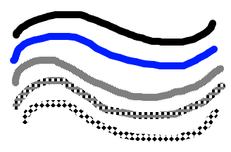

Paintbrush
This is one of the primary tools used for drawing. You can configure the brush size and fill style using the controls in the toolbar.
To draw using this tool, simple left click and drag the mouse.
When using the Solid Brush fill style, the primary color is used. If you are using a different file style, both the primary and secondary color will be used for the different parts of the pattern. If you use the right mouse button to draw instead of the left mouse button, the roles of the primary and secondary colors will be reversed.
The following example shows the brush being used to draw a brush stroke in solid black, solid blue, and three various fill styles.

This tool also has Tablet PC support. The thickness of the brush will be varied depending on how much pressure you put on the tablet's screen with the stylus. Support for this feature requires a Tablet PC that is running Windows XP Tablet PC Edition.
Copyright © 2005 Rick Brewster, Chris Crosetto, Tom
Jackson, Michael Kelsey, Brandon Ortiz, Craig Taylor, Chris Trevino, and Luke Walker. Portions Copyright
© 2005 Microsoft Corporation. All Rights Reserved.